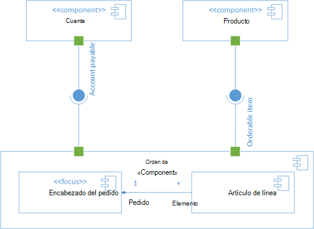

Los diagramas de componentes en UML son una herramienta de modelado que se utiliza para representar la estructura de componentes de un sistema de software y las relaciones entre ellos. Los componentes son unidades modulares de software que encapsulan funcionalidades y pueden ser reutilizados en diferentes contextos. Estos diagramas son útiles para visualizar la arquitectura del sistema, identificar los componentes principales y comprender cómo interactúan entre sí.